Visual Quality Control and Interpretation
diagnostic_plots.RmdWhy visualise?
Numbers summarise; plots reveal. A p-value tells you something is significant, but a volcano plot shows you whether that significance is driven by a few outliers or a robust pattern. Always plot your data before trusting the statistics.
This vignette shows what “good” and “bad” look like for each diagnostic plot.
Creating example datasets
We’ll create two datasets: one well-behaved, one problematic.
set.seed(123)
# Good data: clean separation, no outliers, balanced
# Using 10 reps and 3-fold changes for good power
make_good_data <- function() {
n_peptides <- 40
n_reps <- 10
peptides <- paste0("PEP_", sprintf("%03d", 1:n_peptides))
genes <- paste0("GENE_", LETTERS[((1:n_peptides - 1) %% 26) + 1])
diff_peptides <- peptides[1:12] # 30% differential
sim_data <- expand.grid(
peptide = peptides,
treatment = c("ctrl", "trt"),
bio_rep = 1:n_reps,
stringsAsFactors = FALSE
) %>%
mutate(
gene_id = genes[match(peptide, peptides)],
base = rep(rgamma(n_peptides, shape = 8, rate = 0.8), each = 2 * n_reps),
effect = ifelse(peptide %in% diff_peptides & treatment == "trt",
sample(c(0.33, 3), length(diff_peptides) * n_reps, replace = TRUE),
1),
value = rgamma(n(), shape = 20, rate = 20 / (base * effect))
) %>%
select(peptide, gene_id, treatment, bio_rep, value)
temp_file <- tempfile(fileext = ".csv")
write.csv(sim_data, temp_file, row.names = FALSE)
read_pepdiff(temp_file, id = "peptide", gene = "gene_id",
value = "value", factors = "treatment", replicate = "bio_rep")
}
good_data <- make_good_data()
# Problematic data: outlier sample, batch effect, systematic missingness
make_bad_data <- function() {
n_peptides <- 40
n_reps <- 10
peptides <- paste0("PEP_", sprintf("%03d", 1:n_peptides))
genes <- paste0("GENE_", LETTERS[((1:n_peptides - 1) %% 26) + 1])
sim_data <- expand.grid(
peptide = peptides,
treatment = c("ctrl", "trt"),
bio_rep = 1:n_reps,
stringsAsFactors = FALSE
) %>%
mutate(
gene_id = genes[match(peptide, peptides)],
base = rep(rgamma(n_peptides, shape = 5, rate = 0.5), each = 2 * n_reps),
# Outlier: one control sample has 3x higher values
batch_effect = ifelse(treatment == "ctrl" & bio_rep == 1, 3, 1),
value = rgamma(n(), shape = 10, rate = 10 / (base * batch_effect))
) %>%
select(peptide, gene_id, treatment, bio_rep, value)
# Add systematic missingness: low-abundance peptides missing in treatment
low_abundance <- peptides[31:40]
sim_data <- sim_data %>%
mutate(value = ifelse(peptide %in% low_abundance & treatment == "trt" & runif(n()) < 0.7,
NA, value))
temp_file <- tempfile(fileext = ".csv")
write.csv(sim_data, temp_file, row.names = FALSE)
read_pepdiff(temp_file, id = "peptide", gene = "gene_id",
value = "value", factors = "treatment", replicate = "bio_rep")
}
bad_data <- make_bad_data()Data-level diagnostics
PCA plot
PCA (Principal Component Analysis) projects your high-dimensional data onto 2D. Samples that are similar cluster together.
Good PCA:
plot_pca_simple(good_data)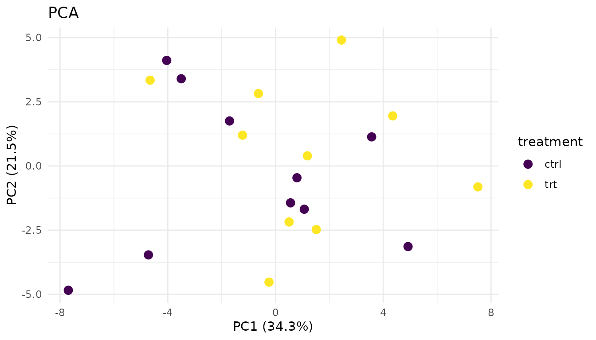
- Replicates from the same condition cluster together
- Groups are separated (if there’s a biological effect)
- No wild outliers
Problematic PCA:
plot_pca_simple(bad_data)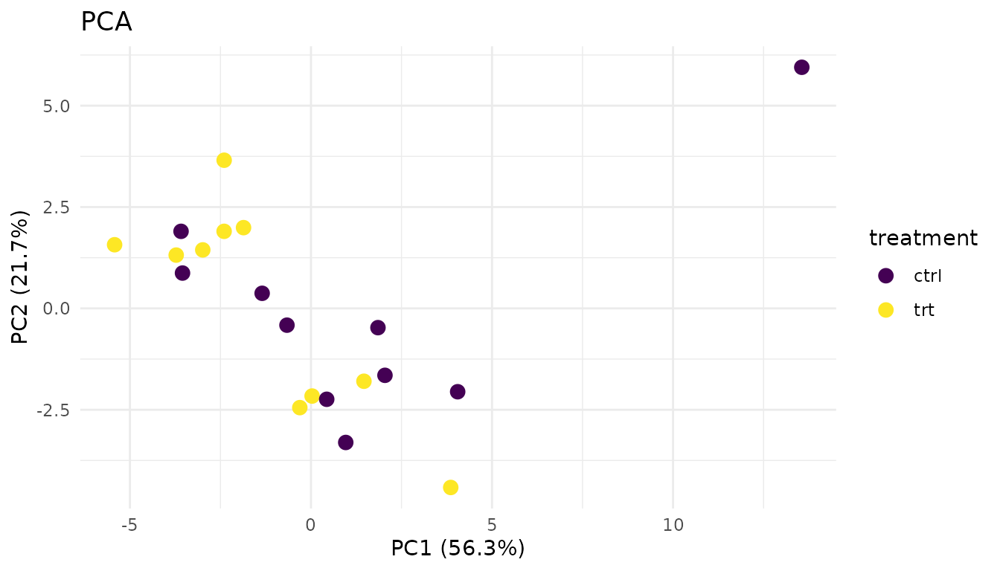
Warning signs: - Outlier sample: One point far from its group suggests a sample quality issue - No separation: If groups overlap completely, your treatment may have no effect (or the effect is too small to detect) - Unexpected clustering: Samples clustering by batch/run date instead of treatment suggests a batch effect
What to do: - Investigate outliers - check sample prep notes, consider excluding - If batch effects dominate, you may need to include batch in your model or use batch correction
Distribution plots
plot_distributions_simple(good_data)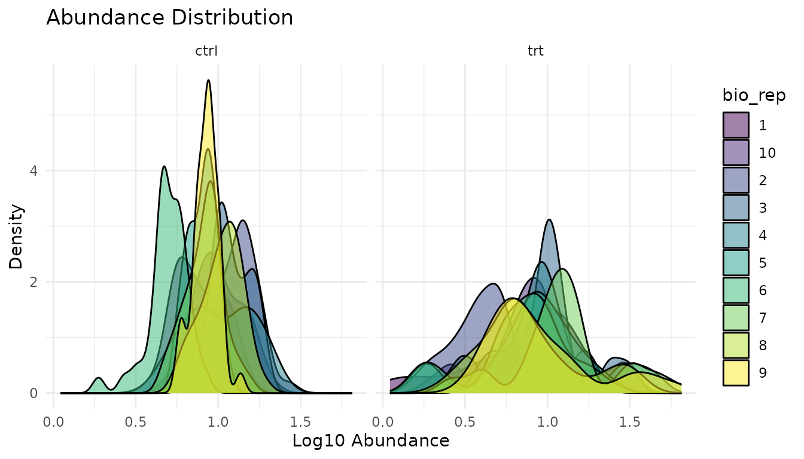
What to look for: Similar shapes and locations across samples. Proteomics data is typically right-skewed - that’s expected.
plot_distributions_simple(bad_data)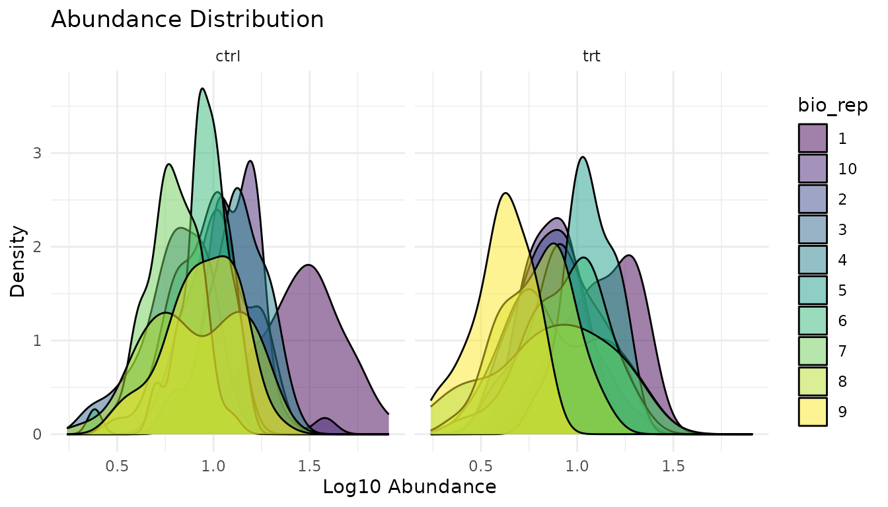
Warning signs: - Shifted distributions: One sample systematically higher/lower suggests normalisation issues - Different shapes: One sample much more spread out suggests technical problems - Bimodal distributions: May indicate a mixture of populations
What to do: - Check if data was normalised appropriately - Investigate shifted samples for technical issues - Consider whether the shifted sample should be excluded
Missingness plot
plot_missingness_simple(good_data)Good missingness: Random scatter, or no missing values at all. Missing values occur independently of abundance or condition.
plot_missingness_simple(bad_data)
Warning signs: - MNAR pattern: Low-abundance peptides preferentially missing. This is “missing not at random” - the value is missing because it’s low (below detection limit). - Condition-specific missingness: Peptides missing only in treatment (or only in control) may indicate true biological absence, or may be technical artifacts.
What to do: - MNAR is common in proteomics and difficult to handle properly - Peptides with high missingness often can’t be reliably analysed - pepdiff doesn’t impute - if data is missing, the peptide may be excluded from analysis - See peppwR for understanding missingness patterns and power implications
Results-level diagnostics
Let’s run analyses on both datasets:
good_results <- compare(good_data, compare = "treatment", ref = "ctrl")
bad_results <- compare(bad_data, compare = "treatment", ref = "ctrl")Volcano plot
The volcano plot shows effect size (fold change) vs statistical significance. It’s the most informative single plot for differential abundance results.
Good volcano:
plot_volcano_new(good_results)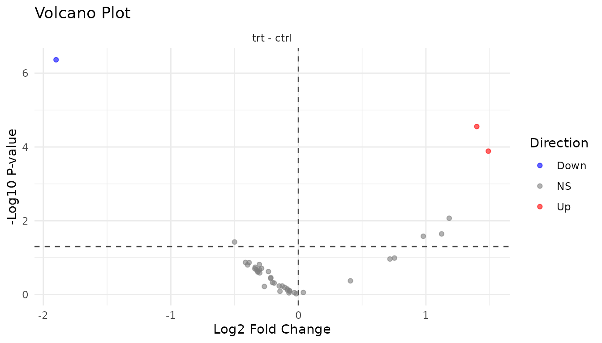
- Symmetric spread: Roughly equal up and down regulation
- Significant hits at edges: Large fold changes with low p-values
- Cloud in centre: Most peptides show small, non-significant changes
Problematic volcano:
plot_volcano_new(bad_results)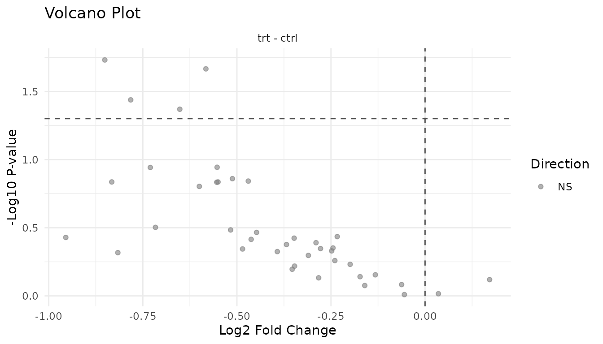
Warning signs: - Asymmetric: All significant hits in one direction may indicate a global shift (normalisation problem) rather than true differential expression - Vertical stripe at FC=1: Many significant hits with tiny fold changes suggests p-value inflation - Everything significant: Likely a technical artifact or analysis error
P-value histogram
The p-value histogram reveals whether your statistical assumptions are met.
Understanding the shapes:
Under the null hypothesis (no true effects), p-values are uniformly distributed - every value from 0 to 1 is equally likely. When true effects exist, those peptides get pulled toward 0, creating a spike.
Good p-value histogram:
plot_pvalue_histogram(good_results)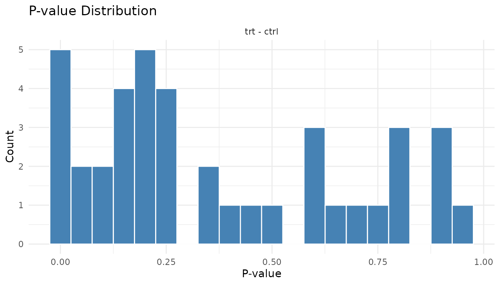
- Uniform base + spike near 0: This is ideal. The uniform part represents true nulls, the spike represents true positives.
- The height of the spike relative to the uniform part tells you roughly what fraction of peptides have real effects.
Problematic p-value histogram:
plot_pvalue_histogram(bad_results)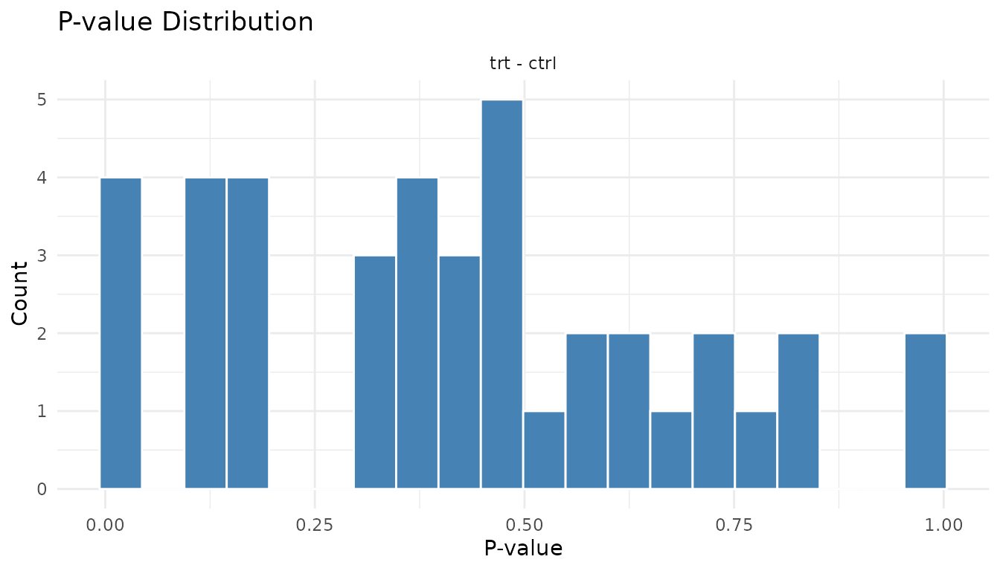
Warning signs: - U-shape (spikes at both 0 and 1): P-value inflation. Your test is anti-conservative - it’s giving too many small AND too many large p-values. Often indicates violated assumptions. - Spike at 1 only: Test is too conservative. May happen with very small sample sizes. - Completely uniform: No signal at all. Either no true effects, or not enough power to detect them.
Fold change distribution
plot_fc_distribution_new(good_results)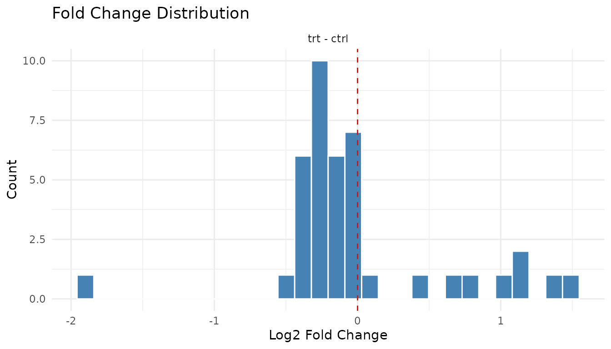
Good: Centred near zero (log2 scale), roughly symmetric. Most peptides don’t change much.
plot_fc_distribution_new(bad_results)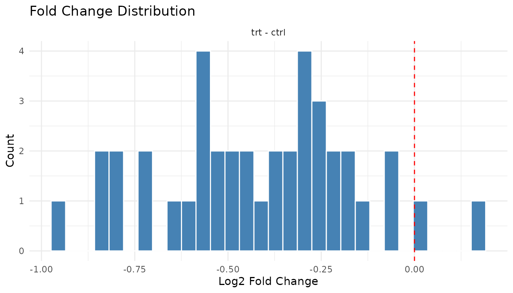
Warning signs: - Systematic shift: Distribution centred away from zero suggests a global offset (normalisation issue) - Bimodal: Two peaks may indicate batch effects or distinct populations
Individual plot functions
The plot() method gives you a multi-panel grid. For
individual plots:
Data-level: - plot_pca_simple(data) -
PCA - plot_distributions_simple(data) - Abundance
distributions - plot_missingness_simple(data) - Missingness
patterns
Results-level: -
plot_volcano_new(results) - Volcano plot -
plot_pvalue_histogram(results) - P-value histogram -
plot_fc_distribution_new(results) - Fold change
distribution
Exporting for publication
All plots are ggplot2 objects, so you can customise and save them:
p <- plot_volcano_new(good_results) +
labs(title = "Treatment vs Control") +
theme_minimal(base_size = 14)
ggsave("volcano.pdf", p, width = 6, height = 5)You can also modify themes, colours, and labels:
plot_volcano_new(good_results) +
theme_classic() +
labs(title = "My Custom Volcano Plot")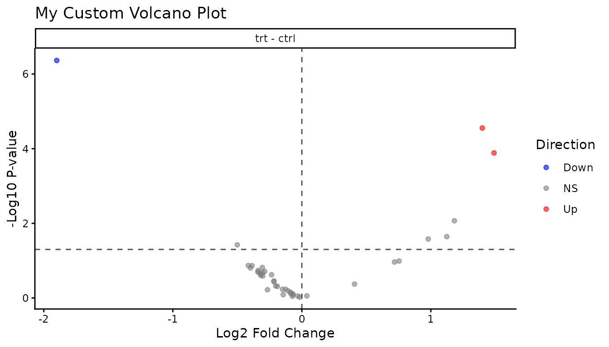
Summary: what to check
Before analysis: 1. PCA - do replicates cluster? Any outliers? 2. Distributions - similar across samples? 3. Missingness - random or systematic?
After analysis: 1. Volcano - symmetric? Hits make sense? 2. P-value histogram - uniform + spike, or something wrong? 3. Fold changes - centred at zero?
If something looks off, investigate before trusting the statistics. Plots often reveal problems that summary numbers hide.